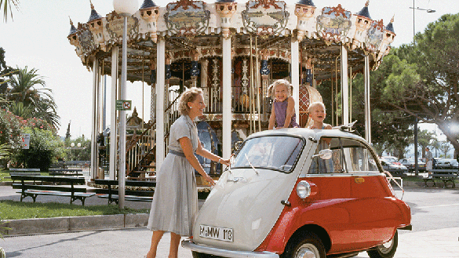
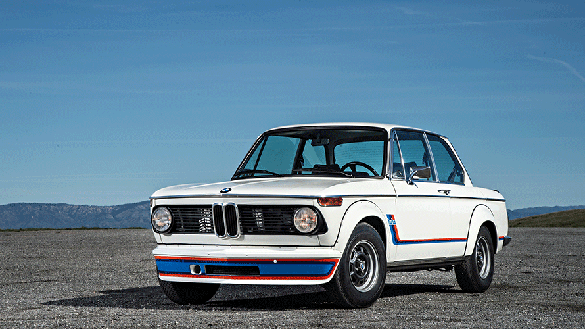
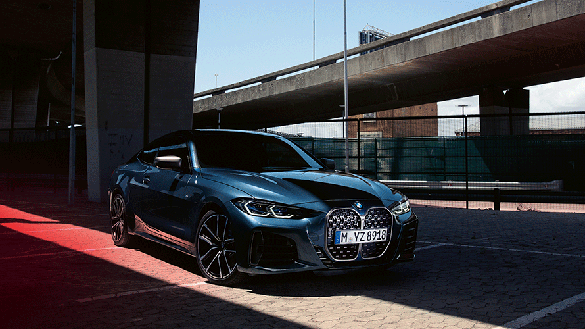
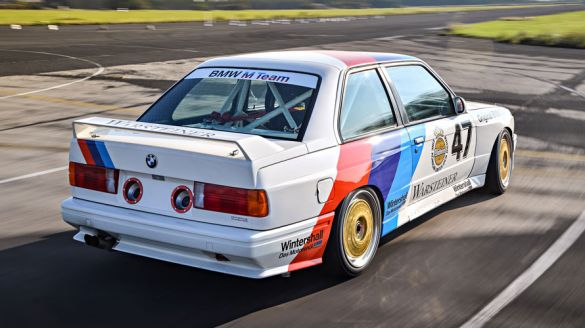

ISTORIA „PLĂCERII DE A CONDUCE”.
„Freude am Fahren”
Esenţa mărcii BMW se defineşte prin „Plăcerea de a conduce”. Sintagma a fost folosită pentru prima dată în campaniile publicitare din anii '30 şi a devenit sloganul oficial BMW în urmă cu 55 de ani, în 1965. Foarte rar o expresie atât de concentrată reflectă spiritul unei companii atât de clar şi rămâne neschimbată de-a lungul deceniilor. Legătura este cu atât mai fascinantă, cu cât tocmai „bucuria”/ „plăcerea” este cuvântul principal care descrie o companie de tehnologie germană. Aceasta este istoria modului în care BMW şi „Freude am Fahren” au evoluat împreună.

65 DE ANI DE BMW ISETTA.
Un model extrem de simpatic şi accesibil.
BMW este recunoscut în prezent pentru automobile premium sportive. De-a lungul timpului compania a creat segmente care au transformat industria auto, precum cel al modelelor sedan foarte sportive, deschis acum 36 de ani cu BMW M5, sau cel al modelelor Sport Activity Coupé, deschis în 2007 cu BMW X6. Iar în istoria de peste 100 de ani a inovat şi s-a transformat permanent, depăşind momente dificile. Aceasta este povestea unui model care a ajuns să reprezinte simbolul optimismului reconstrucţiei germane postbelice: „Biluţa de giugiulit” pe 3 roţi, BMW Isetta.
MAREA REVENIRE BMW.

Anii 1950-1960 au adus unele din cele mai mari crize din istoria BMW şi au oferit scena unei evoluţii remarcabile, din pragul falimentului către succes pe piaţa mondială de automobile. Este unul din exemplele emblematice care atestă puterea de transformare a companiei bavareze şi forţa de a depăşi orice provocare, oricât de dificilă s-ar fi dovedit. Unii dintre cei mai importanţi eroi ai acelei perioade au fost două modele care acum sunt sinonime cu identitatea mărcii: BMW 507 şi BMW 2002.

THE 4
Magia formelor.
Noul BMW Seria 4 Coupé reinterpretează aspectul clasic coupé. Designul reconceput este definit de noi linii cu caracter puternic şi împrumută forma istorică a grilei frontale BMW. Designerul Seungmo Lim descrie cum emoţiile şi dinamica sunt create de jocul important dintre linii, lumină şi contururi – şi care elemente ale automobilului BMW Concept 4 se reflectă şi în producţia de serie.

BMW M3, E30
Dezvoltat direct din motorsport, BMW M3 din 1986 a fost primul model de acest tip. Atunci când automobilul a fost prezentat la Salonul Internaţional Auto de la Frankfurt (IAA) în 1985, acesta a fost o senzaţie. Iar cu numeroasele sale victorii în competiţiile de turisme, BMW M3 a devenit rapid unul dintre cele mai emblematice automobile din portofoliul BMW M. Este timpul să aducem în prim-plan istoria fascinantă a acestei serii legendare, din momentul formării sale odată cu apariţia modelului BMW M3 (E30).